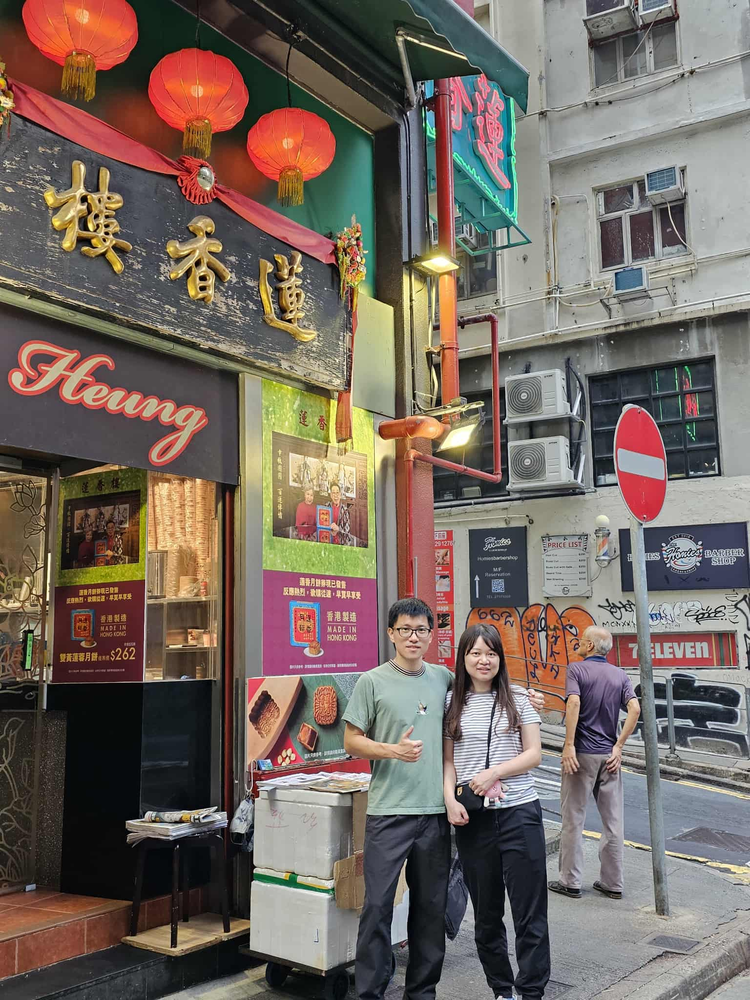
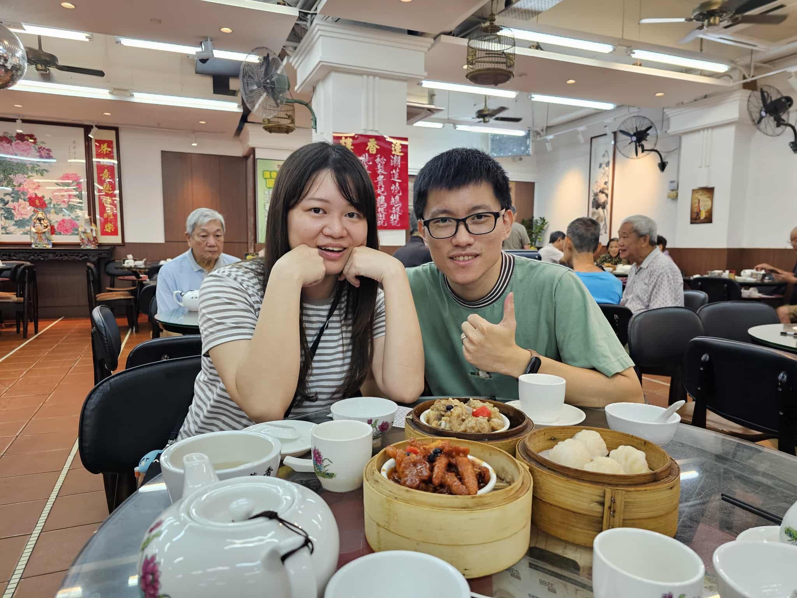
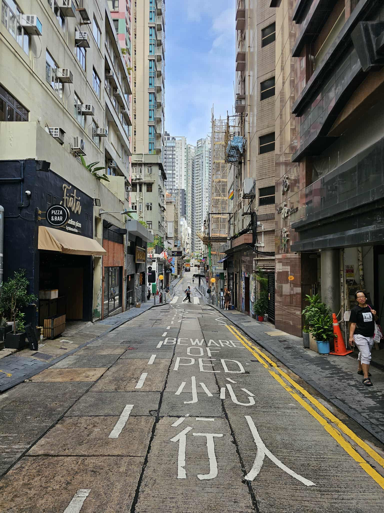

1140826香港一日快閃
凌晨五點多抵達香港機場，有人差點因為沒列印入境許可無法過關，虛驚一場。
早餐吃蓮香樓港式茶飲，感受香港道地的飲茶配點心，體驗新穎。
大館舊式監獄內部很想進去觀賞，可惜太早到還沒開放。
bake house蛋塔吃起來口感鬆軟，內餡飽滿，實為不錯的蛋塔。
特地搭乘體驗小型雙層巴士，車速較慢，可以慢慢欣賞街道風景。
搭乘天星小輪欣賞維多利亞港周遭風景，可惜不是夜晚搭乘，無法體驗到夜景的壯麗。
香港特調牛奶布丁星冰樂系列比預想的好喝且降溫，很適合天氣太過濕熱的香港。
特地去巧佳小巴挑選手寫膠牌鑰匙扣，很適合當紀念品、伴手禮。
榕哥燒鵝餐室生意很好，不過比起燒鵝我更喜歡吃四寶飯，再搭配凍檸茶。
返程因為高雄大雷雨因素，完成國泰航空香港——高雄——桃園——高雄旅程，在桃園多等一個多小時才又飛回高雄，所幸平安降落。


